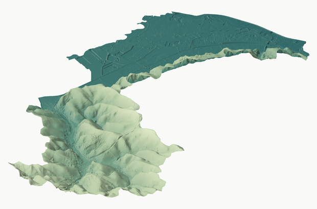
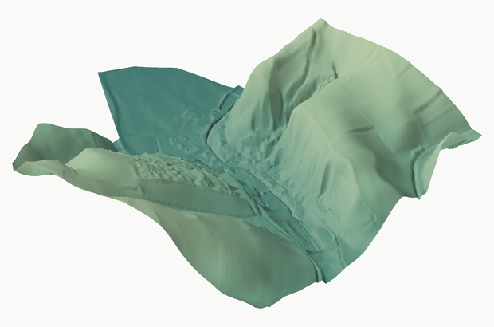
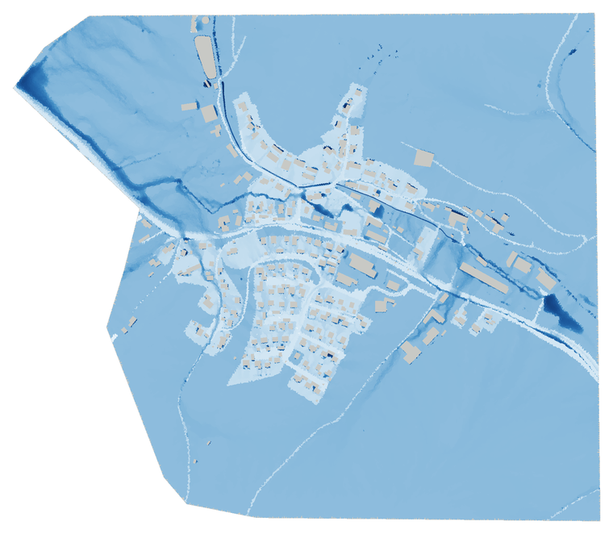
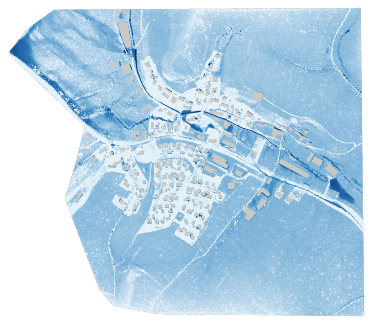
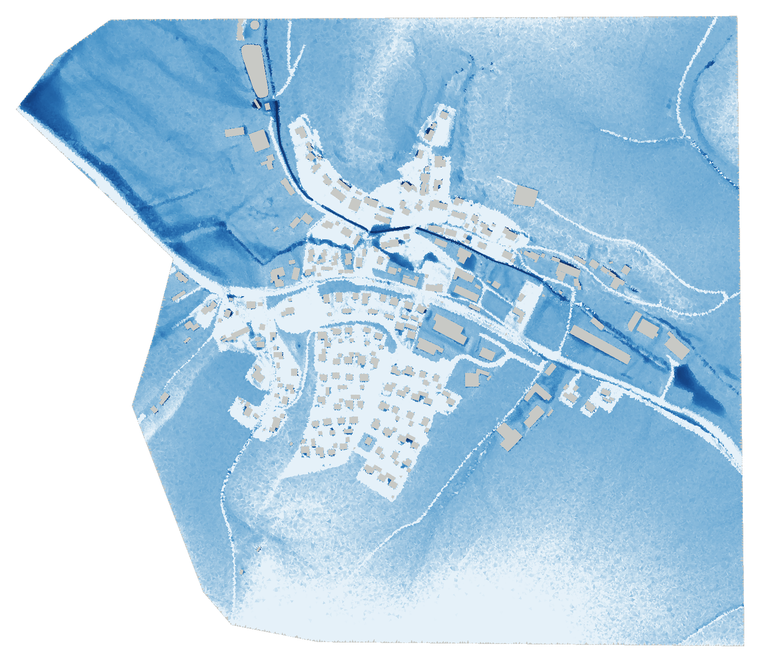
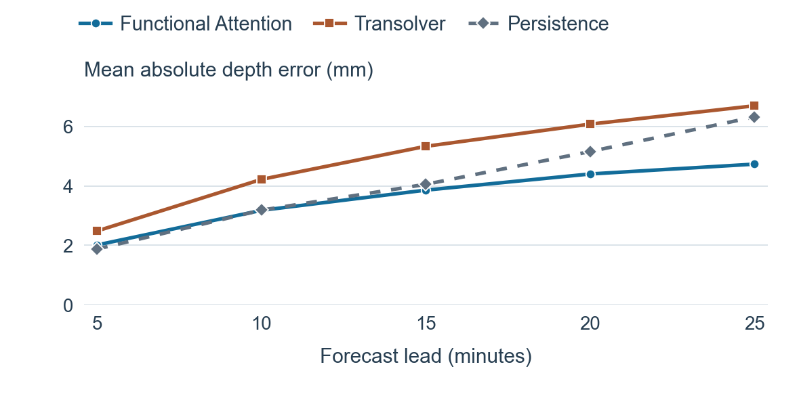

Representing the field
A fine mesh may place many points along one boundary. How should a model weight their contributions when it compresses velocity, pressure or water depth into a small set of tokens?
Research proposal
How much simulation data and training time does a fast surrogate need to predict flow reliably on a geometry it has never seen?


GeoCPM meshes shown at the same angle. Higher ground appears lighter. Relief is exaggerated 5×, and each site is scaled to fit.
KISS · Preliminary results
Both models start from the reference field at event minute 30 and predict five successive five-minute steps. The maps compare their final water depths with the GeoCPM reference at minute 55.
Reference solver

Neural operator

Neural operator

All three maps use the same nonlinear depth scale. Grey cells had no initial depth record and are excluded from the error calculation.
At a 25-minute lead, mean absolute depth error was 4.73 mm for Functional Attention, 6.69 mm for Transolver and 6.32 mm for persistence, which holds the initial field fixed.
One rainfall event, one training seed and 196,031 evaluated triangles. Rainfall input was set to zero from event minute 45. This test measures forecasting within a site.

Terrain and reference simulations supplied by tandler for the KISS project.
Research programme
A fine mesh may place many points along one boundary. How should a model weight their contributions when it compresses velocity, pressure or water depth into a small set of tokens?
The same rain can produce different flooding on two terrains. The study tests whether a separate geometry representation improves flow prediction over supplying all inputs together.
The experiments compare training from scratch with adapting a pretrained model. At the same forecast accuracy, which needs fewer new simulations and less total computation?
Proposed KISS benchmark
Urban flood forecasts depend on terrain, rainfall, infiltration and exchange between surface water and sewers. The planned benchmark will reserve entire real and synthetic catchments for testing.